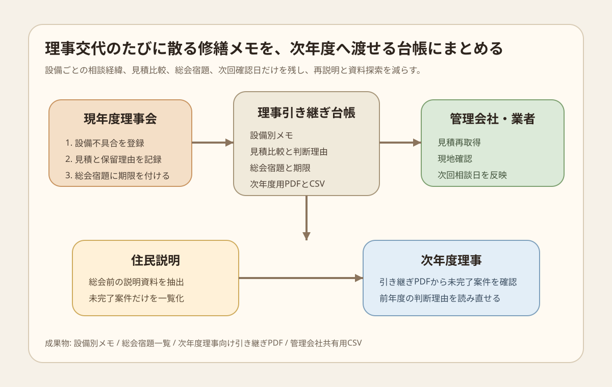

Question Note
マンション管理組合の理事引き継ぎと修繕記録の散逸を減らす小規模サービス案

全体像
分譲マンションでは、建物の老朽化だけでなく、管理組合の役員が短期間で入れ替わることで、修繕の検討履歴、業者との相談、見積比較、 総会での保留事項が毎年散りやすくなります。課題は長期修繕計画そのものがないことより、計画を見直す前段の記録と申し送りが続かないことです。
狙いは、マンション再生全体を解くことではなく、 中小規模マンションの管理組合が次年度理事へ引き継ぐ修繕メモ、見積比較、総会宿題、業者連絡先 に絞ることです。
どの社会問題を切り出すか
| 現場課題 | 何が起きるか | 既存手段の限界 |
|---|---|---|
| 理事の任期が短い | 前年度の相談経緯が消え、同じ説明を管理会社や業者に何度も求める。 | 紙の引き継ぎ書やメール箱だけでは、設備別の判断理由を追いにくい。 |
| 修繕の優先順位が見えない | 漏水、掲示板、インターホン、共用灯などの宿題が総会ごとに前後する。 | 長期修繕計画はあっても、日々の小修繕メモや保留事項を載せにくい。 |
| 総会後の宿題が散る | 見積再取得、住民説明、補助制度確認が次年度に持ち越される。 | 議事録だけでは担当、期限、次の確認点まで一目で分からない。 |
既存の仕組みで足りない点
- 管理会社の通常運用は強いが、小規模マンションや自主管理では役員側の宿題管理まで面倒を見にくい。
- 長期修繕計画や管理計画認定の資料は重要だが、理事交代のたびに必要な日次オペレーションの受け渡し面までは埋まりにくい。
- 議事録や共有ドライブがあっても、設備別、年度別、担当別の動きが結びつかず、判断の背景が抜けやすい。
サービス案
管理組合向けに、設備ごとの修繕メモ、見積比較、総会宿題、次回確認日、業者連絡先を 1つの画面で軽く回せる「理事引き継ぎ台帳」を提供します。
- 設備ごとに、発生日、写真、相談先、保留理由、次の確認日を残す。
- 見積書ごとの比較メモと、採用しなかった理由を簡潔に残す。
- 総会や理事会で出た宿題を、担当者と期限つきで一覧化する。
- 次年度理事向けに、未完了案件だけを抜いた引き継ぎPDFを出力する。
- 管理会社共有用と住民説明用で、見せる範囲を分ける。
100万円規模に抑えた市場設定
初年度は1市内で接点を持てる中小規模マンション管理組合60棟を到達可能市場とし、 その中から12棟に導入する前提にします。理事会交代の時期に合わせて説明し、 月額利用料と初期整備費で約100万円の売上を作る想定です。
| 項目 | 仮定 | 結果 |
|---|---|---|
| 到達可能市場 | 1市内の管理組合60棟 | 管理会社、地域相談会、紹介で1人が回れる範囲 |
| 初年度導入 | 12棟 | 理事交代期と修繕相談の多い棟から獲得 |
| 月額利用料 | 6,000円 | 864,000円/年 |
| 導入支援 | 18,000円 x 8棟 | 144,000円 |
| 初年度売上予想 | 合計 | 1,008,000円 |
収益モデル
- 基本: 管理組合または管理会社経由の月額利用料
- 追加: 初期台帳設計、過去議事録の要点整理、設備分類の初期登録
- 追加: 理事交代時の引き継ぎ資料作成支援
初期は工事の成約手数料ではなく、理事交代時の引き継ぎ漏れと再説明コストを減らす固定課金の方が、 利害関係を複雑にせず導入しやすいです。
必要なシステム要件と支出
| 領域 | 要件・使い道 | 年額の目安 |
|---|---|---|
| フロント | 理事、監事、管理会社担当がスマホで設備メモと宿題を見られる画面 | 0円〜 |
| バックエンド | 棟、設備、案件、担当、期限、写真、議事メモを管理 | 42,000円 |
| 通知 | 期限前通知、引き継ぎ時の確認依頼、総会前の宿題整理をメールで送る | 18,000円 |
| 帳票・記録 | 引き継ぎPDF、設備別CSV、総会説明用の簡易資料を出力 | 18,000円 |
| 運用・専門確認 | ドメイン、バックアップ、規約表現、個人情報の扱い、説明資料レビュー | 92,000円 |
| 年間支出 | 合計 | 170,000円 |
システム費用は、管理組合ごとの大規模カスタマイズを避け、設備分類と引き継ぎ帳票を共通化する前提です。 AIを使って議事録要約や説明資料のたたき台を作り、人手は公開範囲と記載内容の確認に寄せます。
AIを使った開発見積もり
AIを使うと、ヒアリング項目、CRUD画面、CSV/PDF出力、テストデータ、議事録の要点整理を短縮できます。 ただし、管理規約や個人情報の扱い、住民説明に使う言い回し、工事判断の責任分界は人が詰めます。
| 工程 | AI活用 | 目安 |
|---|---|---|
| 要件整理 | 理事交代、宿題管理、設備分類のたたき台を作る | 3〜4日 |
| プロトタイプ | 一覧、詳細、期限通知、帳票出力の初版を実装する | 1〜2週間 |
| 本実装 | 権限、写真管理、CSV/PDF、検索を整える | 2週間 |
| 確認と修正 | 理事交代シナリオのテスト項目を作り直す | 4〜5日 |
1人で進める場合でも、4〜5週間で初期版までは届く想定です。AIで画面と帳票の初速を上げ、 人は管理組合の実務表現に合わせる作業へ集中します。
売上・支出・利益
売上 - 支出 = 利益
| 項目 | 金額 | 補足 |
|---|---|---|
| 売上 | 1,008,000円 | 月額6,000円 x 12棟 x 12か月 + 導入支援144,000円 |
| 支出 | 170,000円 | ホスティング、通知、帳票、規約確認、説明資料レビュー |
| 利益 | 838,000円 | 現場ヒアリングと導入支援の作業時間は別途。小規模検証としては成立する水準 |
必要人数と人材要件
この規模では、実行者1名 + 単発外注を前提にします。
- 実行者: Webアプリを実装でき、管理組合、管理会社、住民説明の言葉を整理できる人
- 補助外注: 規約表現、個人情報、アクセシビリティ、会計処理の確認を単発依頼
- 望ましいスキル: CRUD実装、帳票設計、写真管理、期限通知、現場ヒアリングの構造化
1人でできるのは、軽量な台帳、通知、帳票、月次集計までです。工事判断や法的助言そのものは、 外部専門家や既存の管理会社の役割に残します。
リスクと最初の検証
- 理事会で月額費用を通せない棟には、まず年1回の引き継ぎ資料作成だけで入る必要がある。
- 管理会社が既に強い運用を持つ棟では、全面置き換えでなく補助帳票として使う前提にする。
- 個人情報を持ちすぎないよう、住戸名ではなく設備案件中心で設計する必要がある。
最初は3棟、理事交代を1回だけ試し、未完了宿題の持ち越し件数、再説明の回数、 総会前に探す資料の時間がどれだけ減るかを見ます。
まとめ
このテーマは、マンション再生全体や大規模修繕コンサルではなく、 理事交代時に散りやすい修繕記録と宿題の受け渡しに切ると、 100万円規模でも小さく検証しやすいです。建物の老朽化と住民の高齢化で重くなりがちな議題を、 まずは次年度へ渡す実務メモとして整える切り方です。